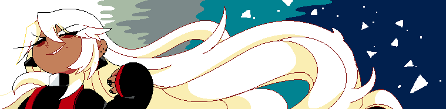
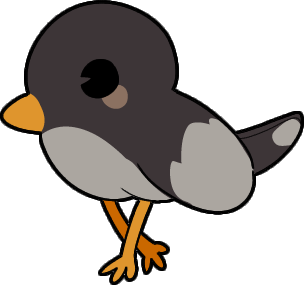
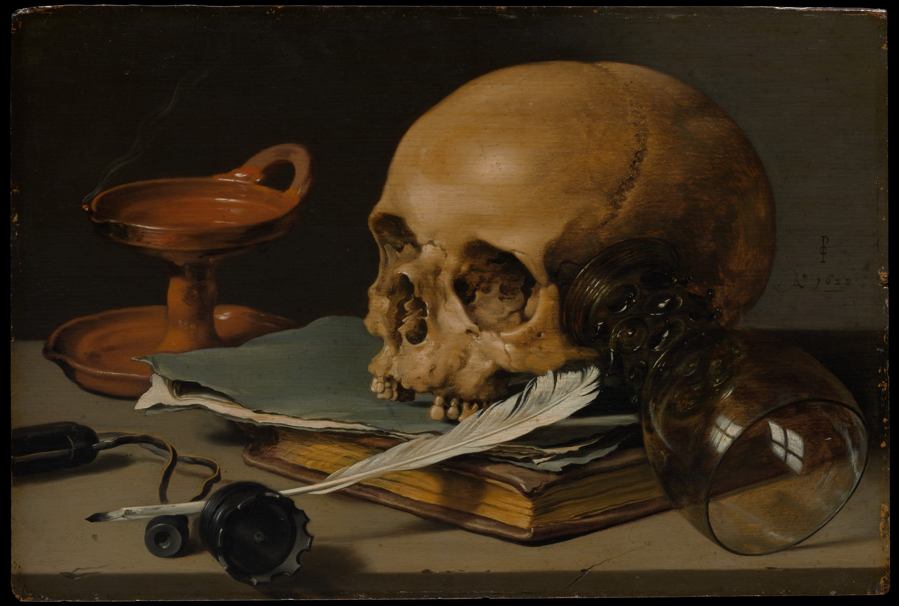

ABOUT THIS SITE
Pieter Claesz, Still Life with a Skull and a Writing Quill, 1628.
 Informatie
Informatie
 Naam: Graveyard Citizen
Naam: Graveyard Citizen
Domein naam: Deathenize
DomeinStatus: 1 Januari
GeboorteDatum: 19 Juni
Bevinding: Nederland 

 My name is graveyard citizen,
My name is graveyard citizen, 
 atleast my artistic name that is, for short you can call me DTK or Mal
atleast my artistic name that is, for short you can call me DTK or Mal
 A love for the macabre, dark, horror art, paintings and litrature
A love for the macabre, dark, horror art, paintings and litrature
I speak Dutch and english, More fluent in Dutch
You are allowed to repost work without selling, and with credit
=> Skullmare is 15+
Please read the NOTE
Tools used for this media:
VSC (Visual Studio Code)
IbiPaintX(used the most)
Clip Studio Paint
RPG Maker MV
Samsung Mobile phone

Copyright © 2024 Skullmare. All rights reserved.